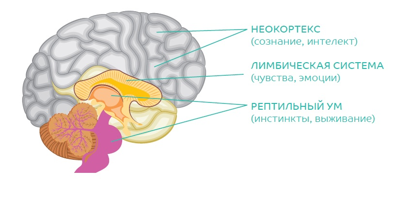

Победитель Лени!
Содержание
- Что такое лень?
- Причины лени
- Мозг постоянно старается экономить энергию
- Победа над ленью дает человеку уникальные бонусы
- Теоретическое обоснование методов ПОБЕДИТЕЛЬ ЛЕНИ
- 20 способов ПОБЕДИТЬ ЛЕНЬ
Что такое лень?
Лень это просто слово. Обычно им обозначают состояние, когда человек не хочет прилагать волевые усилия и преодолевать трудности. Еще словом «лень» называют желание оставаться в Зоне Комфорта. Как проверить тебе действительно «лень» или просто не хочется де- лать? Спроси себя: «А если бы мне заплатили 100 тысяч долларов — я сде- лал бы?». Если ответ «Да», значит, ты это сделать можешь, но не хочешь. При постоянном использовании слова «лень» — возникает условный рефлекс. Достаточно сказать «лень» и бессилие с апатией «накрывают», и человек остается в Зоне Комфорта. Следующие стадии после слова «лень»: Деградация — Депрессия — Впустую прожитая жизнь. Синонимы слова «лень» — убить время, поту- пить, стухнуть.
Причины лени
- Отсутствие эмоциональной, физической и интеллектуальной энергии, неумение управлять собой и незнание того, как заставить себя делать правильные вещи.
- Нахождение в Зоне Комфорта, отсутствие роста.
- Несоответствие «должен» и «хочу» — когда необходимо делать то, что не хочется.
- Интуитивное ощущение ненужности выполняемой в данный момент задачи.
- Большое количество дел и отсутствие плана.
Мозг постоянно старается экономить энергию
Ученые Университета Саймона Фрейзера провели целый ряд исследований, которые показали, что мозг при решении любой задачи пытается найти са- мый простой способ, чтобы совершать как можно меньше действий, по- скольку сохранение энергии — одна из главных целей.Если следовать этой инстинктивной программе — то в итоге вместо экономии можно прийти к исчезновению энергии.
Победа над ленью дает человеку уникальные бонусы
- Возможность делать правильные вещи, например, заниматься спортом, приобретать новые навыки.
- Возможность начинать и заканчивать проекты.
- Возможность делать в 10 раз больше эффективных действий.
- Как следствие получать в 10 раз больше результатов.
Теоретическое обоснование методов ПОБЕДИТЕЛЬ ЛЕНИ
Для того чтобы понять, как победить ЛЕНЬ надо понять, как работает мозг и как им управлять. Вот одна из теорий, которая описывает устройство мозга:
Поль Мак-Лин, автор модели структуры и эволюции мозга «Триединый МОЗГ» говорил: «Мы должны посмотреть на себя и на мир глазами трех совершенно разных личностей, две из которых не вооружены речью». Человеческий мозг, считает Мак-Лин, «равнозначен трем взаимосвязанным биологическим компьютерам», из которых каждый имеет «свой собственный разум, свое собственное чувство времени и пространства, собственную память, двигательную и другие функции».
1. Рептильный ум — инстинктивный мозг
Оказывает фундаментальное влияние на поведение. Отвечает за безопас- ность вида и управляет базовым поведением. Это инстинкт размножения, следование шаблонам, имитация, ритуальное поведение, контроль автома- тических функций организма. Его функции просты: «бежать — сражаться — замереть — выжить». Он полезен для немедленных реакций. Это «автопилот», которым сознательно мы управлять не можем. Его главная задача — защита тела, он настроен на оборону, он всегда «на страже» и «высматривает» опасность для организ- ма. Для сохранения энергии этот мозг «автоматизирует» повторяющиеся процессы. Так создаются привычки и навыки. Он иногда путает воображаемую опасность с реальной угрозой. В та- ких ситуациях рептильный мозг берет под контроль разум и тело. Так как выживание самый сильный инстинкт. Например, если этот мозг почему-то решил, что впереди голодные годы — включается чувство голода и человек ест. А если есть хоть намек на усталость, то включается желание лежать на диване. Как будто наступила зимняя спячка.2. Лимбическая система — эмоциональный мозг
Эмоциональному мозгу присущи такие черты:
-
живет настоящим временем;
- 1 подпункт
- 2 подпункт
- 3 подпункт
- аудиальность — коммуникации с помощью звуков и тонов;
- ориентация на жизнь в группе, его приоритет — выживание груп- пы, семьи, клана;
- не знает вариантов — только «да» и «нет», «хорошо-плохо», «это или то»;
- ассоциативность с определенными моментами жизни — когда мы думаем о чем-то, мы входим в образ и испытываем чувства.
3. Неокортекс — визуальный мозг
Этот мозг способен:
- определить какие действия тебе нужно предпринять,
- поставить цели и составить план,
- обсуждать твои цели и мечты,
- вдохновить тебя и стать причиной действий на короткий промежу- ток времени,
- с помощью логики принимать или отвергать идеи и цели.
20 способов ПОБЕДИТЬ ЛЕНЬ
- Выходи в зону напряжения и показывай, кто хозяин — всадник или корова
- Представь, что будет, если ты достигнешь своихцелей и если не достигнешь их
- Вспомни яркие моменты. Проанализируй прошлый опыт
- Разбивай задачи на маленькие части. Очень маленькие
- Выполняй действие, используя обратный отсчет
- Поставь себе цель, которая зажигает
- Возьми общественное обязательство
- Планируй по всем сферам жизни свой год, месяц,неделю и день
- Задавай себе правильные вопросы
- Создай для себя систему поощрений
- Фокусируйся не на проблеме, а на конечном результате
- Вдохновляйся примерами других
- Подумай о детях и всем своем Роде
- Передай себе мегаресурсное состояние из своего прошлого или будущего
- Выделяй время на выполнение задачи и ни на что не отвлекайся
- «Метод ледяной горки».
- Включись в ролевую игру
- Проведи рациональный глубинный анализ
- Договорись со своей ленью
- Попробуй буквально ничего не делать
Лень, как ржавчина, разъедает быстрее, чем труд изнашивает.
Бенджамин Франклин